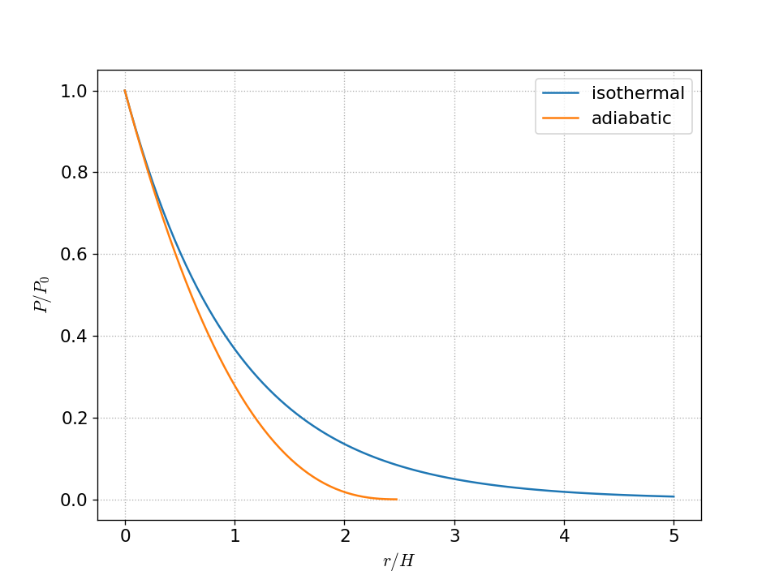

1. Adiabatic index
We want to compute
\[\Gamma_1 = \left . \frac{d\log P}{d\log \rho} \right |_s = \frac{\rho}{P} \left . \frac{dP}{d\rho} \right |_s\]
for a gas composed of a mix of an ideal gas and radiation:
\[P = \frac{1}{3} a T^4 + \frac{\rho k T}{\mu m_u}\]
The corresponding specific energy is:
\[e = \frac{a T^4}{\rho} + \frac{3}{2} \frac{kT}{\mu m_u}\]
We start by writing our EOS as \(P = P(\rho, T(\rho, s))\) and then
takking the derivative with respect to density:
\[\left . \frac{dP}{d\rho} \right |_s
= \left . \frac{\partial P}{\partial \rho} \right |_T
+ \left . \frac{\partial P}{\partial T} \right |_\rho \left . \frac{dT}{d\rho} \right |_s \]
Now, from the first law of thermodynamics, we take entropy to be constant:
\[\begin{align*}
dq = 0 &= de + P d\left ( \frac{1}{\rho} \right ) \\
&= \left . \frac{\partial e}{\partial T} \right |_\rho dT
+ \left . \frac{\partial e}{\partial \rho} \right |_T d\rho - \frac{P}{\rho^2} d\rho
\end{align*}\]
where we expanded out \(de\) in terms of \(T\) and \(\rho\). This shows us that:
\[\left . \frac{dT}{d\rho} \right |_s =
\left ( \left . \frac{\partial e}{\partial T} \right |_\rho \right )^{-1}
\left (\frac{P}{\rho^2} - \left . \frac{\partial e}{\partial \rho} \right |_T \right )\]
Now we need to compute all the derivatives. From our equation of state, we have:
\[\left . \frac{\partial P}{\partial \rho} \right |_T = \frac{kT}{\mu m_i} = \frac{P_g}{\rho}\]
\[\left . \frac{\partial P}{\partial T} \right |_\rho =
\frac{4}{3} a T^3 + \frac{\rho k}{\mu m_u} = \frac{1}{T} \left ( 4 P_\gamma + P_g \right )\]
\[\left . \frac{\partial e}{\partial \rho} \right |_T =
- \frac{aT^4}{\rho^2} = -\frac{3P_\gamma}{\rho^2}\]
\[\left . \frac{\partial e}{\partial T} \right |_\rho =
4 \frac{aT^3}{\rho} + \frac{3}{2} \frac{k}{\mu m_u} = 12 \frac{P_\gamma}{\rho T} + \frac{3}{2} \frac{P_g}{\rho T}\]
Then inserting these into the above expression for \(dT/d\rho |_s\), we have:
\[\left . \frac{dT}{d\rho} \right |_s = \frac{T}{\rho} \frac{1 + 3 (1-\beta)}{12 (1- \beta) + \frac{3}{2}\beta}
= 2 \frac{T}{\rho} \frac{4 - 3\beta}{24 - 21\beta}\]
and finally:
\[\begin{align*}
\left . \frac{dP}{d\rho} \right |_s &= \frac{\beta P}{\rho} +
\frac{P}{T} \left [ 4(1-\beta) + \beta\right ] 2 \frac{T}{\rho}
\frac{4 - 3\beta}{24 - 21\beta} \\
&=\frac{P}{\rho} \frac{32 - 24\beta -3 \beta^2}{24 - 21\beta}
\end{align*}\]
so
\[\Gamma_1 = \frac{32 - 24\beta -3 \beta^2}{24 - 21\beta}\]
We see that this has the proper limits:
2. Convectively unstable atmosphere
a.
We want to find the profile of an isentropic plane-parallel atmosphere. We have:
\[\frac{dP}{dr} = -\rho |g|\]
where \(g\) is constant. If the gas is adiabatic, then the EOS takes the form:
\[P = K \rho^{\Gamma_1}\]
Putting this together, we have:
\[\begin{align*}
\Gamma_1 K \rho^{\Gamma_1 - 1} \frac{d\rho}{dr} &= -\rho |g| \\
\rho^{\Gamma_1 - 2} d\rho &= - \frac{|g|}{\Gamma_1 K} dr
\end{align*}\]
This can be integrated. We take \(P(r = 0) = P_0\), \(\rho(r=0) = \rho_0\) and find:
\[\rho(r) = \rho_0 \left ( 1 - \frac{\Gamma_1 - 1}{\Gamma_1} \frac{|g|}{K} \frac{1}{\rho_0^{\Gamma_1 - 1}} r \right )^{1/(\Gamma_1 - 1)}\]
we can eliminate \(K\) as \(K = P_0 / \rho_0^{\Gamma_1}\) and get:
\[\rho(r) = \rho_0 \left ( 1 - \frac{\Gamma_1 - 1}{\Gamma_1} \frac{|g|\rho_0}{P_0} r \right )^{1/(\Gamma_1 - 1)}\]
or in terms of the scale height, \(H = P_0 / (\rho_0 |g|)\),
\[\rho(r) = \rho_0 \left ( 1 - \frac{\Gamma_1 - 1}{\Gamma_1} \frac{r}{H} \right )^{1/(\Gamma_1 - 1)}\]
Then since \(P(r) = K\rho^{\Gamma_1}\), we have:
\[P(r) = P_0 \left ( 1 - \frac{\Gamma_1 - 1}{\Gamma_1} \frac{r}{H} \right )^{\Gamma_1/(\Gamma_1 - 1)}\]
b.
Here’s a plot

Notice that the adiabatic atmosphere falls off much faster than the isothermal atmosphere.
3. Solar convection
We want to find the thermodynamic profile in the Sun’s convective envelope. If we are convecting, then
the temperature gradient is just the adiabatic gradient:
\[\frac{dT}{dr} = \left ( 1 - \frac{1}{\gamma} \right ) \frac{T}{P} \frac{dP}{dr}\]
now, we use HSE to replace \(dP/dr\) and the ideal gas law to replace \(T/P\), and assume that
all of the mass of the Sun is beneath the convective layer. This gives:
\[\begin{align*}
\frac{dT}{dr} &= \left (1 - \frac{1}{\gamma} \right ) \frac{\mu m_u}{\rho k} \left [ -\rho \frac{G M_\odot}{r^2} \right ] \\
&= - \left ( 1 - \frac{1}{\gamma} \right ) \frac{\mu m_u GM_\odot}{k} \frac{1}{r^2}
\end{align*}\]
We can integrate this from the base of the convective layer, \(R_\mathrm{base}\) to some point inside the convective layer:
\[\int_{T_\mathrm{base}}^{T(r)} dT = - \left ( 1 - \frac{1}{\gamma} \right ) \frac{\mu m_u G M_\odot}{k} \int_{R_\mathrm{base}}^r \frac{dr^\prime}{{r^\prime}^2}\]
This gives:
\[T(r) = T_\mathrm{base} - \left ( 1 - \frac{1}{\gamma} \right ) \frac{\mu m_u GM_\odot}{k} \left (\frac{1}{R_\mathrm{base}} - \frac{1}{r}\right )\]
Now \(\mu\) is a constant, since the convective zone is well mixed. If we write the atomic number as \(\mathcal{Z}\) and atomic weight as \(\mathcal{A}\),
then
\[\frac{1}{\mu} = \sum_k \frac{\mathcal{Z}_k X_k}{\mathcal{A}_k} \approx 2 X + \frac{3}{4} Y + \left \langle \frac{\mathcal{Z}}{\mathcal{A}} \right \rangle Z\]
and if we take \(\langle \mathcal{Z}/\mathcal{A} \rangle \approx 1/2\), then we get \(\mu \approx 0.6\).
For pressure and density, we start with an adiabatic equation of state:
\[P = K \rho^\gamma\]
and then into HSE:
\[\begin{align*}
\frac{dP}{dr} &= - \frac{GM_\odot}{r^2} \rho \\
\gamma K \rho^{\gamma - 1} \frac{d\rho}{dr} &= - \frac{GM_\odot}{r^2} \rho \\
\rho^{\gamma-2} d\rho &= -\frac{GM_\odot}{\gamma K} \frac{dr}{r^2}
\end{align*}\]
we can now integrate this from the base of the convective layer to a point in the interior:
\[\int_{\rho_\mathrm{base}}^{\rho(r)} \rho^{\gamma - 2} d\rho = - \frac{GM_\odot}{\gamma K} \int_{R_\mathrm{base}}^r \frac{dr^\prime}{{r^\prime}^2}\]
doing this integral gives:
\[\rho = \rho_\mathrm{base} \left [ 1 - \frac{GM}{K\rho^{\gamma-1}} \frac{\gamma - 1}{\gamma} \left ( \frac{1}{R_\mathrm{base}} - \frac{1}{r} \right ) \right ]^{1/(\gamma-1)}\]
But since \(K = P_\mathrm{base}{\rho_\mathrm{base}}\), we have
\[\rho = \rho_\mathrm{base} \left [ 1 - \frac{GM\rho_\mathrm{base}}{P_\mathrm{base}} \frac{\gamma - 1}{\gamma} \left ( \frac{1}{R_\mathrm{base}} - \frac{1}{r} \right ) \right ]^{1/(\gamma-1)}\]
and then
\[P = P_\mathrm{base} \left [ 1 - \frac{GM\rho_\mathrm{base}}{P_\mathrm{base}} \frac{\gamma - 1}{\gamma} \left ( \frac{1}{R_\mathrm{base}} - \frac{1}{r} \right ) \right ]^{\gamma/(\gamma-1)}\]